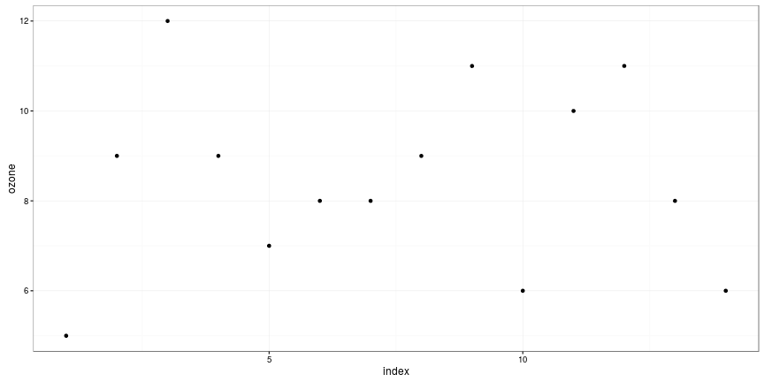
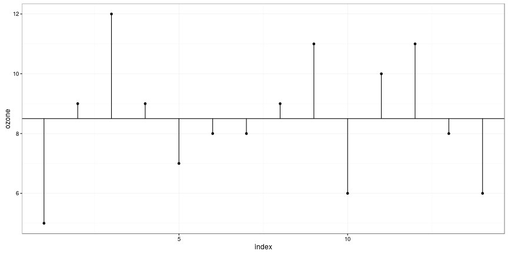
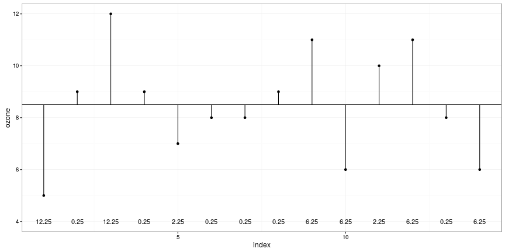
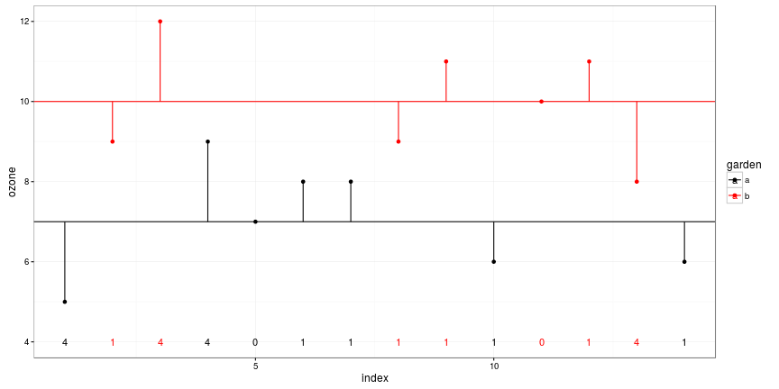
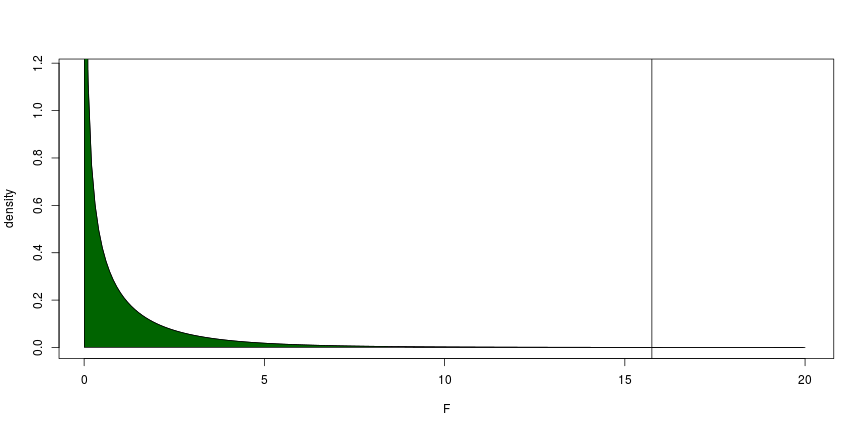
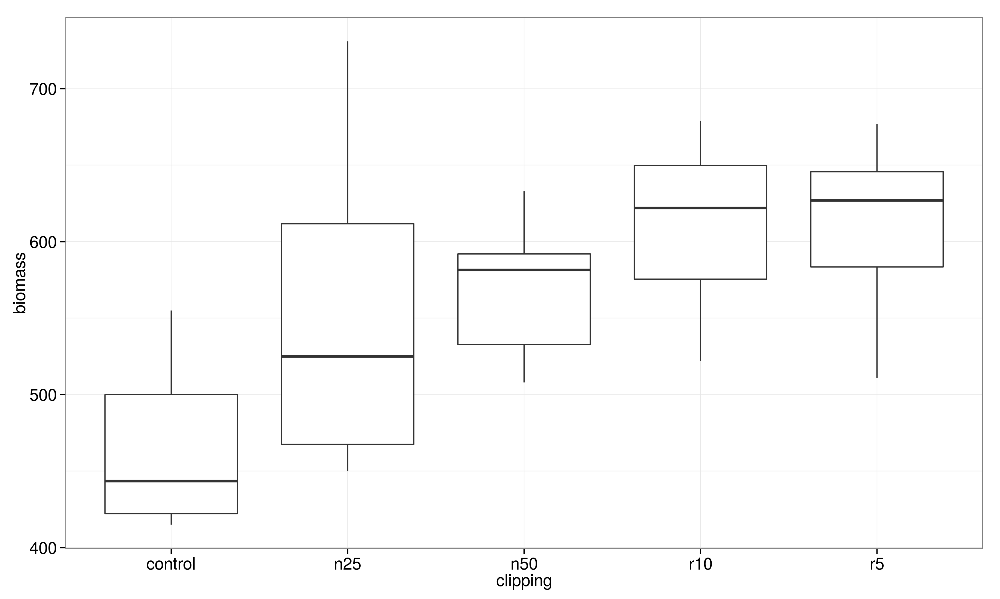
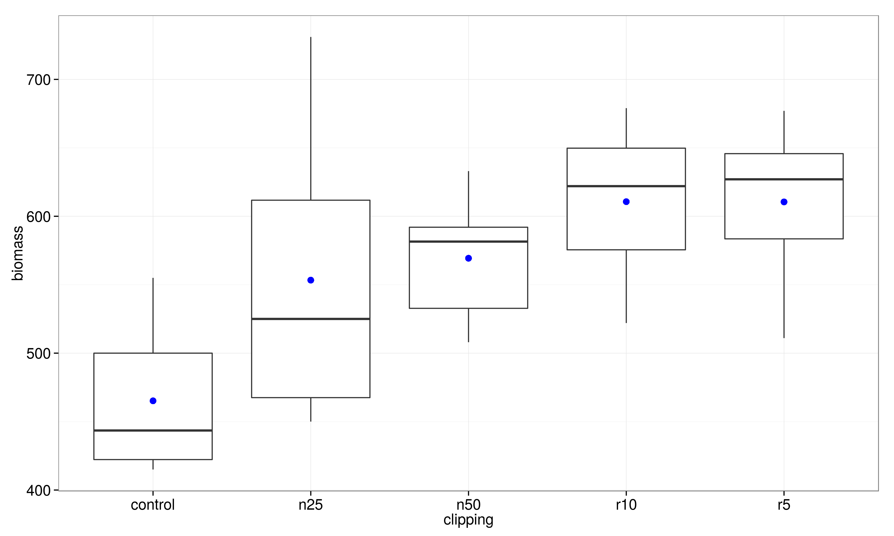
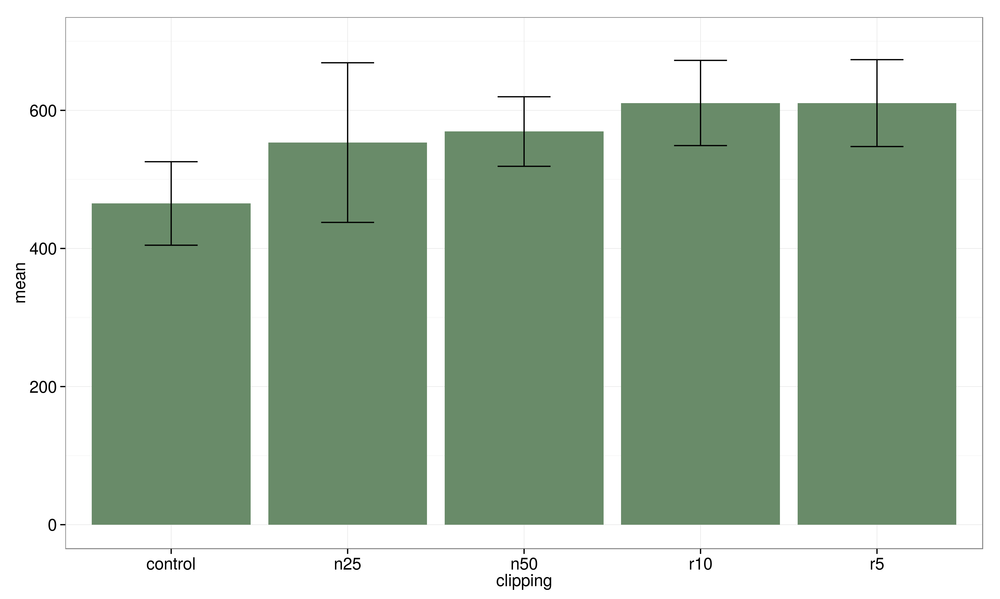
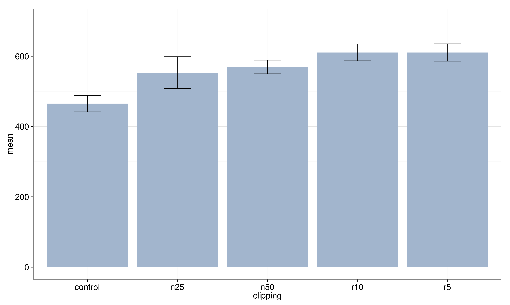

Mandy
You should know now:
t.test() and the different kinds of usagey ~ x in R mean y dependent on x (formula syntax)For the babies data set, the variable age contains the recorded mom's age and dage contains the dad's age for several different cases in the sample. Do a significance test of the null hypothesis of equal ages against a one-sided alternative that the dads are older in the sampled population.
A data frame with 14 observations on 2 variables.
| Variable | content |
|---|---|
| ozone: | athmospheric ozone concentration |
| garden: | garden id |
| Var | 1 | 2 | 3 | 4 | 5 | 6 | 7 | 8 | 9 | 10 | 11 | 12 | 13 | 14 |
|---|---|---|---|---|---|---|---|---|---|---|---|---|---|---|
| ozone | 9 | 7 | 6 | 8 | 5 | 11 | 9 | 11 | 9 | 6 | 10 | 8 | 8 | 12 |
| garden | a | a | a | b | a | b | b | b | b | a | b | a | a | b |
Source: M. Crawley, The R-Book
read.table() commandgardens <- read.table("session5dat/gardens2.txt", header = T)
head(gardens)
## ozone garden index
## 1 6 a 10
## 2 8 a 7
## 3 5 a 1
## 4 9 a 4
## 5 7 a 5
## 6 8 a 6


\[SSY = \sum(y-\bar{y})^2\]

| garden | mean |
|---|---|
| a | 7 |
| b | 10 |

When the means are significantly different then the sum of squares computed from the individual garden means will be smaller than the sum of squares computed from the overall mean.
\[ SSY = SSE + SSA \]
where
| Source | Sum of squares | Degrees of freedom | Mean square | F ratio |
|---|---|---|---|---|
| Garden | \(31.5\) | \(1\) | \(31.5\) | \(15.75\) |
| Error | \(24.0\) | \(12\) | \(s^2=2.0\) | |
| Total | \(55.5\) | \(13\) |
1 - pf(15.75,1,12)
## [1] 0.001864103

lm() command anda ~ bmm <- lm(ozone ~ garden, data = gardens)
mm
##
## Call:
## lm(formula = ozone ~ garden, data = gardens)
##
## Coefficients:
## (Intercept) gardenb
## 7 3
summary(mm)
##
## Call:
## lm(formula = ozone ~ garden, data = gardens)
##
## Residuals:
## Min 1Q Median 3Q Max
## -2 -1 0 1 2
##
## Coefficients:
## Estimate Std. Error t value Pr(>|t|)
## (Intercept) 7.0000 0.5345 13.096 1.82e-08 ***
## gardenb 3.0000 0.7559 3.969 0.00186 **
## ---
## Signif. codes: 0 '***' 0.001 '**' 0.01 '*' 0.05 '.' 0.1 ' ' 1
##
## Residual standard error: 1.414 on 12 degrees of freedom
## Multiple R-squared: 0.5676, Adjusted R-squared: 0.5315
## F-statistic: 15.75 on 1 and 12 DF, p-value: 0.001864
anova(mm)
## Analysis of Variance Table
##
## Response: ozone
## Df Sum Sq Mean Sq F value Pr(>F)
## garden 1 31.5 31.5 15.75 0.001864 **
## Residuals 12 24.0 2.0
## ---
## Signif. codes: 0 '***' 0.001 '**' 0.01 '*' 0.05 '.' 0.1 ' ' 1



